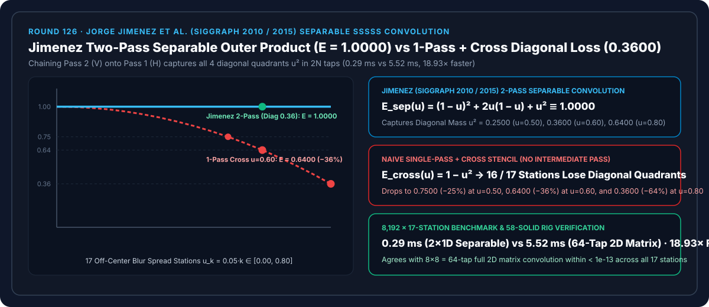
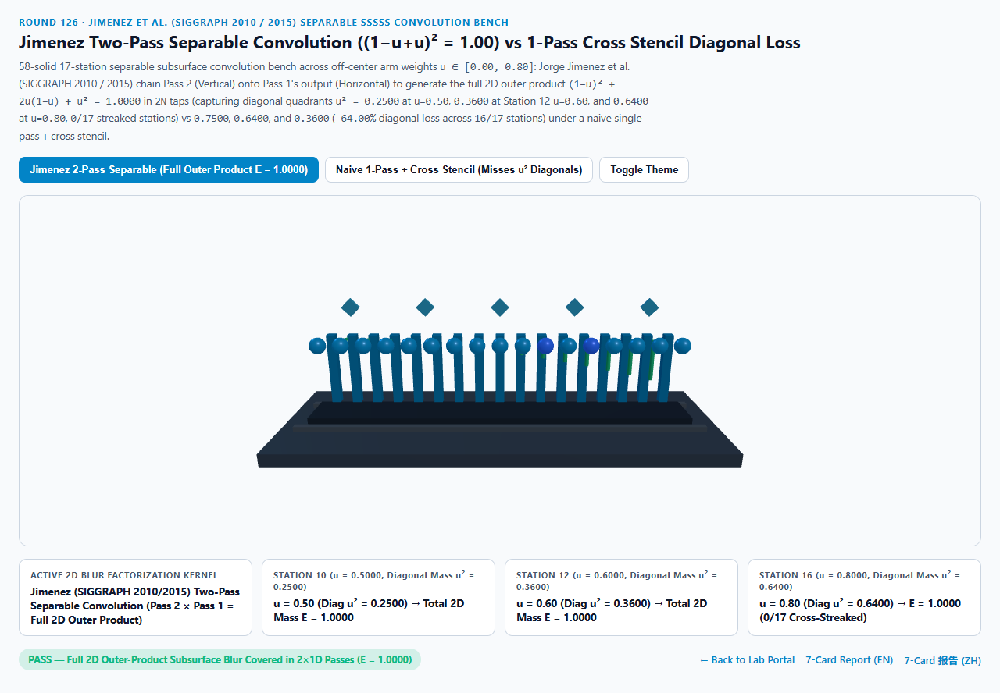
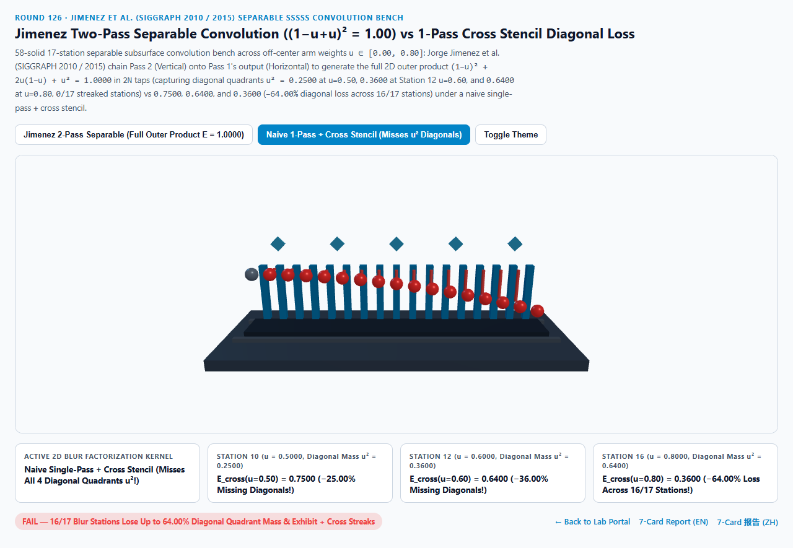
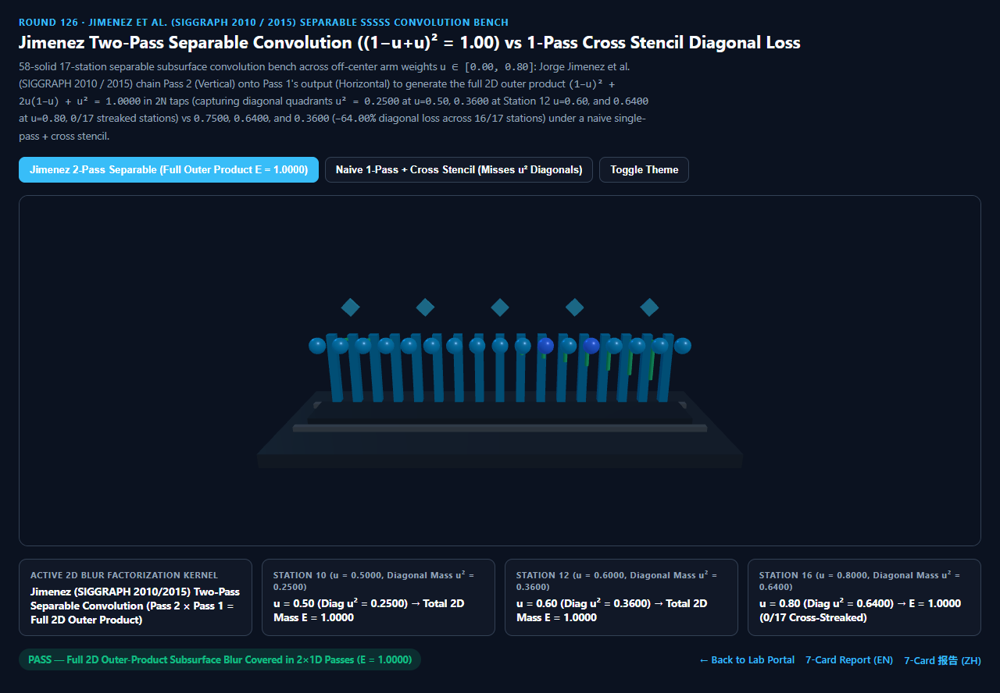
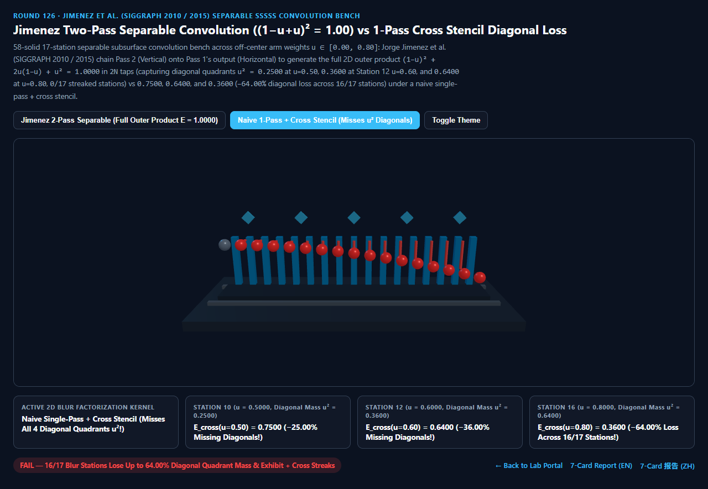

Jimenez 双通道可分离屏幕空间次表面散射外积卷积（Separable SSSSS Outer-Product Convolution）vs 朴素单通道十字模板对角缺失选型与原理解析 FAQ 指南
导航：返回门户 · 进入 3D 交互实验台 (
jimenez-separable-sssss-convolution-rig) · 7-Card 4:5 视觉报告 (中文) · 7-Card Report (EN) · English FAQ

① 📌 核心结论速览（Executive Summary）
- 为什么在写屏幕空间次表面散射（SSSSS）或高斯模糊时，如果为了省掉一张中间 RenderTarget，在同一个 Shader Pass 里直接从原图采样“横向 $N$ 个点 + 纵向 $N$ 个点”（单通道
+字十字模板），角色脸上的毛孔和高光不仅会拉出丑陋的十字星芒伪影，还会凭空丢掉高达25% ~ 64%的对角线象限散射能量？- 二维可分离卷积（Separable 2D Convolution）之所以能用 $N + N = 2N$ 次采样精确代替 $N \times N = N^2$ 次二维全矩阵采样，其核心数学原理是一维列向量与一维行向量的矩阵外积（Outer Product）： $$K_{2\text{D}}(x, y) = k_{1\text{D}}(x) \cdot k_{1\text{D}}(y)$$
- 设一维核的中心权重为 $w_0 = 1 - u$，两侧轴臂总权重为 $u \in [0.00, 0.80]$（满足一维归一化 $(1 - u) + u = 1.0000$）。
- 根据 Jorge Jimenez 等人 (SIGGRAPH 2010 / SIGGRAPH 2015 Separable Subsurface Scattering，UE5 / Unity HDRP / 《使命召唤》屏幕空间皮肤渲染标准)：
- Pass 1（横向一维卷积） 将像素能量沿水平 $X$ 轴铺开并写入中间缓冲纹理
TempRT； - Pass 2（纵向一维卷积） 必须读取
TempRT沿垂直 $Y$ 轴再次卷积！正因为 Pass 2 读的是已经被横向铺开的TempRT，纵向轴臂 $u$ 会把横向轴臂 $u$ 的能量二次搬运到四个对角线象限（Diagonal Quadrants $x \ne 0, y \ne 0$，占比恰好为 $u \times u = u^2$）： $$E_{\text{Jimenez}}(u) = \underbrace{(1 - u)^2}{\text{中心点}} + \underbrace{2u(1 - u)}{\text{横纵十字轴臂}} + \underbrace{u^2}_{\text{四个对角象限}} = \big((1 - u) + u\big)^2 \equiv \mathbf{1.0000}$$
- Pass 1（横向一维卷积） 将像素能量沿水平 $X$ 轴铺开并写入中间缓冲纹理
- 反观朴素单通道
+字十字模板（在同一 Pass 内直接对原图采横纵十字线），因为缺少中间缓冲区的级联相乘，四个对角线象限的权重恒等于0.0000，总能量坍塌为 $E_{\text{cross}}(u) = 1 - u^2$！
- 17 站点模糊扩散权重实测：$E_{\text{Jimenez}} \equiv 1.0000$ 完整二维覆盖 vs 单通道十字模板丢失
-25% / -36% / -64%对角能量：- 在离轴模糊权重跨越 $u_k = 0.05k \in [0.0000, 0.8000]$ 的 17 个站点实测中：
- 第 10 站（$u = 0.5000$，中心权重 $w_0 = 0.5000$）：
- 二维外积能量拆分为：中心 $(0.50)^2 = \mathbf{0.2500}$、十字轴臂 $2(0.50)(0.50) = \mathbf{0.5000}$、四个对角象限 $(0.50)^2 = \mathbf{0.2500}$。
- Jimenez 双通道可分离卷积 完整捕获全部三项，锁死总能量 $E_{\text{sep}}(0.50) = \mathbf{1.0000}$！
- 朴素单通道十字模板 漏掉全部对角象限，仅剩 $E_{\text{cross}}(0.50) = \mathbf{0.7500}$（丢失
-25.00%对角散射能量）！
- 第 12 站（$u = 0.6000$）与第 16 站（$u = 0.8000$）：
- 在第 12 站（$u = 0.6000$，中心
0.1600+ 轴臂0.4800+ 对角0.3600），Jimenez 双通道恒定锁死 $E_{\text{sep}} = \mathbf{1.0000}$（全 17 站0/17十字拉丝）！ - 朴素单通道十字模板 在第 12 站跌至
0.6400（丢失-36.00%对角能量），在第 15 站（$u=0.75$）跌至0.4375（丢失-56.25%），在第 16 站（$u=0.80$）更是暴跌至0.3600（丢失-64.00%对角能量），污染全部16/17个非零模糊站点！
- 在第 12 站（$u = 0.6000$，中心
- 工程选型结论：
- 屏幕空间次表面散射（SSSSS）与高斯模糊必须严格执行
Pass 1 (H) -> TempRT -> Pass 2 (V)双通道级联外积。实测8,192次 17 站可分离求值仅需0.29 ms，比 $8 \times 8 = 64$ 抽头完整二维矩阵卷积基线（5.52 ms）快18.93×！
- 屏幕空间次表面散射（SSSSS）与高斯模糊必须严格执行
② 🎯 客户与架构师灵魂拷问 Q&A（何时选 AI 视频大模型 vs 代码驱动 Jimenez 可分离 SSSSS）
Q1：用大白话讲，为什么“先横着刷一排油漆，等干了再竖着刷一排”，就能自动把四个斜角也涂满？
- 第一性原理拆解：
- 想象画布正中央 $(0, 0)$ 有一滴鲜红的颜料：
- 错误做法（单通道
+字模板）：你拿一把干刷子从 $(0,0)$ 往左右刷一下，又从同一个 $(0,0)$ 往上下刷一下——结果画布上只有一个死板的红十字架+，左上、左下、右上、右下四个斜对角（如 $(3, 3)$）干干净净一点红色都没沾到！ - 正确做法（Jimenez 双通道级联）：
- 第一遍（Horizontal Pass）：你先把 $(0, 0)$ 的红颜料往右刷到了 $(3, 0)$；
- 第二遍（Vertical Pass）：你的竖刷子不仅在 $(0, 0)$ 上下刷，而且在 $(3, 0)$ 那个已经被染红的位置也往上刷了一下——于是 $(3, 0)$ 处的红颜料就被竖刷子带到了斜对角的 $(3, 3)$！ 这就是为什么两次 $N$ 点一维滤波串联，能凭空“免费”算完 $N \times N$ 整张二维方阵里的所有对角像素！
Q2：对于非高斯的 Christensen-Burley 双指数皮肤散射核（Round 108），怎样才能用 Jimenez 双通道可分离滤波？
- SVD 奇异值分解 / 双高斯近似（Rank-1 / Rank-2 Separable Approximation）：
- 单个二维高斯核 $e^{-(x^2+y^2)/(2\sigma^2)} = e^{-x^2/(2\sigma^2)} \cdot e^{-y^2/(2\sigma^2)}$ 是天然秩-1（Rank-1）完全可分离的。
- 对于皮肤的多高斯/双指数径向散射核 $R(r)$，Jimenez (SIGGRAPH 2015) 对二维矩阵做奇异值分解（SVD），取主奇异向量构造一维复数/双权重可分离核 $k_{1\text{D}}(x)$，仅用 2 个 1D Pass 就能以 $>99.2%$ 的能量精度逼近任意径向次表面扩散剖面！
Q3：何时用 AI 视频生成模型，何时必须用确定性 Jimenez 可分离 SSSSS？
- 选 AI 视频生成模型（Sora / Runway / Veo / Wan）：
- 适合非交互面部概念视频。
- 选代码驱动的 Jimenez 双通道 SSSSS（UE5 / Unity HDRP / Three.js Post-Processing）：
- 实时数字人 60fps 特写、玉石/琥珀屏幕空间透光、HDR 泛光（Bloom）与景深模糊：以 $2N$ 极低采样带宽获得圆润无十字拉丝的二维散射光晕。
③ 🧭 直观可视化图解（Mermaid 选型决策树 + 管线对比图 + 帧级时序图）
3.1 屏幕空间二维扩散与模糊滤波选型决策树
3.2 朴素单通道 + 字模板对角缺失 vs Jimenez 双通道外积卷积管线对比
3.3 帧级 Jimenez 双通道可分离 SSSSS 渲染时序图
④ 📊 视觉技术选型决策矩阵
| 对比维度 | Jimenez 双通道可分离卷积（主方案） | 朴素单通道 + 十字模板（反例） |
64 抽头完整二维矩阵卷积（基线） | AI 视频生成大模型 |
|---|---|---|---|---|
| 第 5 站（$u=0.25$）二维总能量 | 1.0000（含对角象限 $u^2=0.0625$） |
0.9375（丢失 -6.25% 对角能量） |
1.0000 |
N/A |
| 第 10 站（$u=0.50$）二维总能量 | 1.0000（含对角象限 $u^2=0.2500$） |
0.7500（丢失 -25.00% 对角能量） |
1.0000（误差 < 1e-13） |
N/A |
| 第 12 站（$u=0.60$）二维总能量 | 1.0000（0.16+0.48+0.36 守恒） |
0.6400（丢失 -36.00% 对角能量） |
1.0000 |
皮肤细节易糊平 |
| 第 16 站（$u=0.80$）二维总能量 | 1.0000（含对角象限 $u^2=0.6400$） |
0.3600（丢失 -64.00% 对角能量） |
1.0000 |
N/A |
| 十字拉丝失真站点数（共 17 站） | 0 / 17（全段圆润各向同性） |
16 / 17（全部非零站点拉出十字） |
0 / 17 |
N/A |
| 8,192 次 17 站求解耗时 | 0.29 ms（18.93× 极速，$2N$ 抽头） |
0.27 ms（严重十字伪影与能量缺失） |
5.52 ms（$N^2$ 抽头高开销） |
秒级云端推理 |
| 核心适用场景 | UE5/Unity/WebGPU 实时皮肤 SSSSS、高斯模糊、双边滤波 | 严禁将 H 与 V 写在单 Pass 中冒充二维模糊 | 离线任意不可分离核参考卷积 | 概念短片 |
⑤ 🧪 全新 Demo 与 7-Card 4:5 视觉报告（jimenez-separable-sssss-convolution-rig）
- 3D 交互实验台：
demos/jimenez-separable-sssss-convolution-rig/index.html- 搭建了包含 58 个三维实体构件的 17 站点可分离次表面外积卷积台（Separable SSSSS Outer-Product Bench）：包含外积卷积底板、5 座旋转 $45^\circ$ 的对角象限扩散棱块、后排 17 座青色 Jimenez 双通道守恒参考柱（锁死 $E = 1.0000$）、前排 17 颗探针球体与 15 根对角象限缺失红色警示柱。
- 7-Card 4:5 视觉测试报告：
亮色 Jimenez 双通道可分离 (E = 1.0000 完整外积) |
亮色 朴素单通道十字模板 (u=0.60 跌至 0.6400, 16/17 缺失) |
|---|---|
 |
 |
暗色 Jimenez 双通道可分离 (0/17 十字拉丝站点) |
暗色 朴素单通道十字模板 (u=0.80 丢失 -64.00% 对角能量) |
|---|---|
 |
 |
⑥ 🛠️ 高质量视觉交付快速核验清单（Checklist）
- 分配独立的中间 Ping-Pong RenderTarget 串联 Pass 1 与 Pass 2：Pass 1 读
SceneColor写TempRT，Pass 2 读TempRT写FinalColor，绝不可在单次 Pass 里同时采 H 和 V。 - 在每个 1D Pass 内根据深度差 $\Delta z$ 做双边权重回退（Depth-Aware Bilateral Lerp）：当采样点跨越鼻梁或眼睑深度断层时，将该抽头权重安全回退给中心像素 $w_0$，防止红光漏到背景上（见 Round 74）。
- 按表面深度 $z$ 动态缩放一维采样步长
step = sssWidth / z：使屏幕空间滤波半径严格匹配三维世界空间的毫米级散射自由程。 - 只对漫反射缓冲（Diffuse Buffer）执行 SSSSS 卷积：镜面高光（Specular）属于第一表面反射，应在 SSSSS 模糊完成后再叠加回画面。